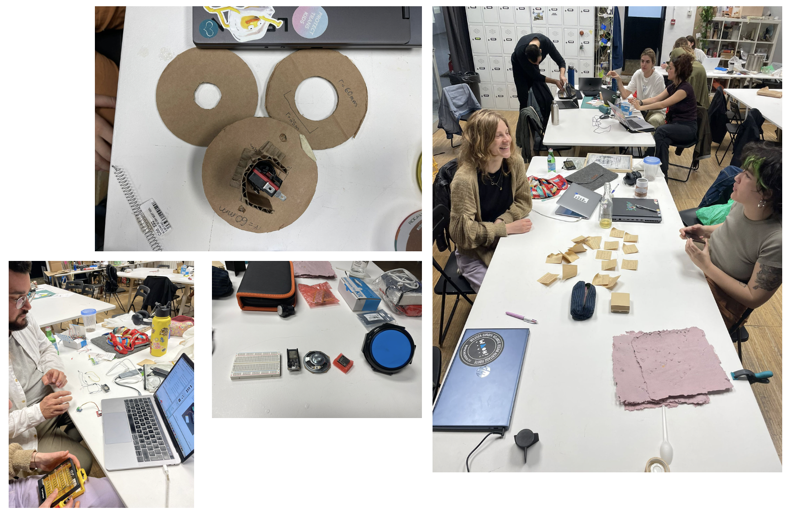
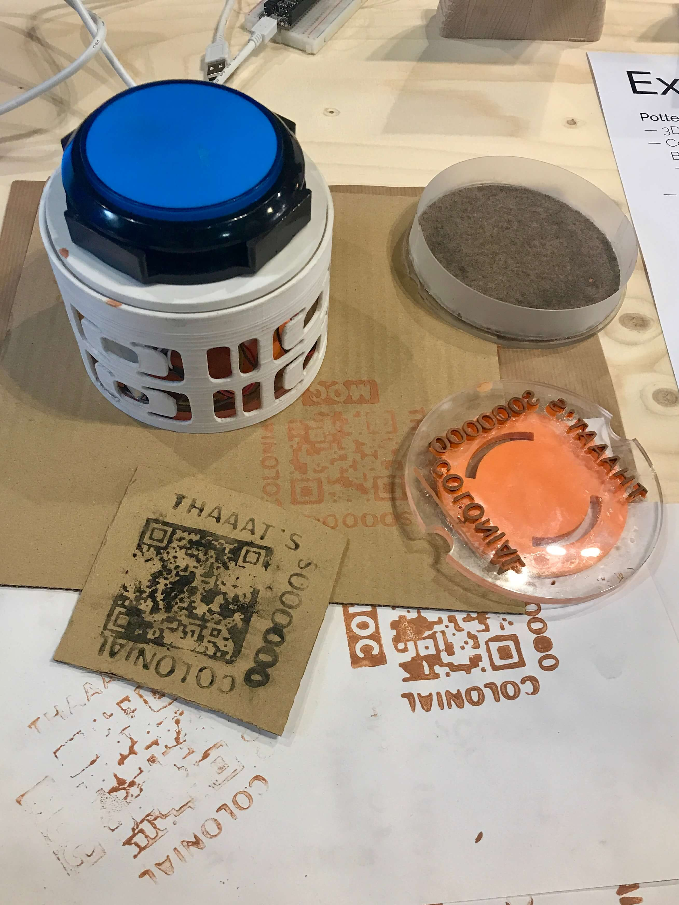
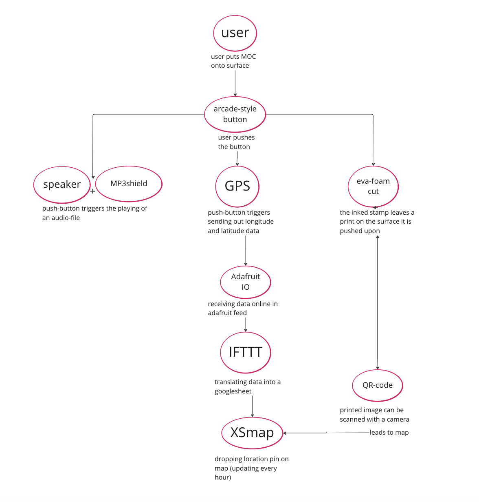
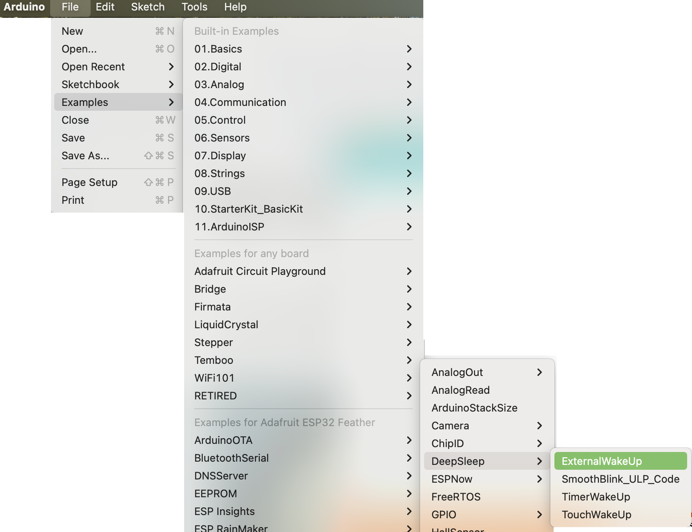

¶
🗓 Week 20 / 14 - 17 March 2023
second micro-challenge week¶
with Daphne, Josep, Santi, Mikel, Edu, Perta and Adai
During the past weeks the MOC-team from the the first micro challenge often sat together talking about the impacts and pottentials of the idea of the MOC. There are still a lot of things we did not materialiize let alone put into practice and context yet. So whilw we rarely had time to work on it in the time in-between the micor-challenges, we all were motivated to dedicate that time again to contribute to decolonial practices.
MOC-II (Museum Of Colonialization)¶
with marielle and carolina
In our part of the miro we are trying to capture our thoughts. Paralelly, we are working in a repo where you can find detailed information about the how’s and what’s, and in a notion page that has a more user-friendly documentation purpose.
to follow our guirilla-traces, enter our map (it is updating only every hour - so have some patience if you are the one stamping atm)

what we ask this time¶
REDEFINITION: everywhere on the world we encounter signs of colonial-pracices that increase iniequalities. This can be linked to past practices of european colonialism, or present practices of plastic pollution. We can see this in the statues that populate city-streets but also in the plant-hybrids(ecological imperialism). The thing is, we constantly overlook these signs and keep things for granted in everyday life. Our goal is to make colonial-signs more visible to all of us passing them everyday. How can we provoke attention? How can we question what we take for granted?
ideas to go on with from the first iteration of the MOC:
• printing entry-tickets or receipts that a visitor gets once “visiting” the museum. printing device
• sticker to sticker the streetscapes (and statues) of the city - guerilla like
We furthermore collected the qualities and the attributes we want our next iteration to have.
Qualities: playful learning; feeling seen; questioning the everyday / taken for granted
attributes: portable; interactive; respectful; fun; triggering
what we provide¶
a portable guerilla stamp that everyone can use to mark that they paid attention. That they recognize an entangled (hi)story that is not been paid enough attention to.
this time we come up with the idea of a (guerilla) stamp / attention-button a la that was easy. A person pushes our button that at the same time is a stamp. Thus pressing onto the button leaves a print on the surface the button is put upon. And that surface can be anything from a statue, a strees, a building to a plant, a tree or a banana in the supermarket. Through the push-mechanism, a speaker is activated that says something (provoking) and the GPS location of the user is added to a MOC Map. The image the stamp stamps is a QR-code (and potentially a provocing sentence) that leads directlly to the map on which the user will encounter their location as a pin as well as all ther pins of prior users.

how we get there - in theory¶
we are designing a portable device that functions as a button and carries all the electronics that we need to excecute our codes. The device needs to be able to play a sound-file, determine its location and linking it to an online platform. At the same time, it needs to be able to be pressed against a surface and leave a trace with the image we want (stamp). For that we need to develop:
software: code for speaker, code for GPS (more detailed later on)
hardware: button-mechanism (take the big button that exists (arcade style) and just print a “lid”, nice cover), stamp (eva foam block), ink, battery to charge, GPS, speaker, sd-card holder / MP3 shield, feather
we devided task and it was interesting to see how a group work, in which each part is essential to the functioning of the whole turns out to be a very individual working time. Everyday we have lunch together on the roof and we update each other on our progress because in the end, each of us works alone. Marielle is busy with the stamp, button-machanism, I am doing the programming for the online mapping (GPS ect.) and Carolina is busy with programming the audio.
how we get there - in practice¶
all of the technical parts are more detailed documented in this GitHub repository. Here I will reflect on my personal workflow that was reelated to the GPS programming and the online linkages.
we translate a cardboard prototype into Rhino to be 3D printed. We do this all together, giving feedback on assembling, practicality, function and measurements and combining small dots of knowledges we have between the three of us. We export it as an st-file and set up the CURA-file to print it in the 3D-printers over night. It takes two printing trials and the new designs I start over with grasshopper to be able to adapt the digital model according to the changing measurements of all the electronics that need to fit it. In another night way later on, we print another version which turns out good - as we want it for now.
so then to the GPS
first things first, is it possible? I talk with Victor:
what we need is to record the geolocation and the time (through a GPS in the device). There needs to be featherboard in the device. On the featherbaord, we connect a GPS that will give us the data of the geolocation and time. Then, we have to link that data to a webpage or a existing map in order t create a QR code that can be translated into a stamp and will lead to that digital interfacec. This means, we meed to access a public webserver. The question is, through which server / which computer will we be able t translate the data from the feather onto the digital platform (map…)? could be a this is mqtt (which works via publish and subscribe) technique.
ok, it seems possible. With the help of Edu, I compile the hardware needed to obtain a GPS signal. I use our adafruiit featherboard and a Qwiic GPS SparkFun. We install some libraries linked to this specific GPS into our arduino app and run a few different example codes to see what we get. After few trials, it works (we have to leave the building though to get our location). So we have a GPS that gives us the date, time, longitute and altitude data. This now has to be translatetd from the feather and arduino, to a digital platform. It also has to work on battery if we want it to be portable.
The part that was supposed to be the most easy part (translating the GPS data into a digital platform and into a simple data-sheet) turned out to take us a whole morning of searching in old codes, reading and watching tutorials and mixing it up to create our own code. Without Daphne and all her patience this would have never worked out. And then the end of course Victor who came for half an hour and brough some order into our chaos - and siehe da, the code works. One of our main manuals was this.
the code at this stage:
#include <SparkFun_I2C_GPS_Arduino_Library.h> //Use Library Manager or download here: https://github.com/sparkfun/SparkFun_I2C_GPS_Arduino_Library
I2CGPS myI2CGPS; //Hook object to the library
#include <TinyGPS++.h> //From: https://github.com/mikalhart/TinyGPSPlus
TinyGPSPlus gps; //Declare gps object
#include <Wire.h>
#include <WiFi.h>
#include "Adafruit_MQTT.h"
#include "Adafruit_MQTT_Client.h"
#define WLAN_SSID "wifi"
#define WLAN_PASS "wifi password"
#define AIO_SERVER "io.adafruit.com"
#define AIO_SERVERPORT 1883
#define AIO_USERNAME "IO username"
#define AIO_KEY "IO key"
WiFiClient client;
const char MQTT_SERVER[] PROGMEM = AIO_SERVER;
const char MQTT_USERNAME[] PROGMEM = AIO_USERNAME;
const char MQTT_PASSWORD[] PROGMEM = AIO_KEY;
// Setup the MQTT client class by passing in the WiFi client and MQTT server and login details.
Adafruit_MQTT_Client mqtt(&client, AIO_SERVER, AIO_SERVERPORT, AIO_USERNAME, AIO_KEY);
//Adafruit_MQTT_Subscribe gpsdata = Adafruit_MQTT_Subscribe(&mqtt, AIO_USERNAME "/feeds/gpsdata");
Adafruit_MQTT_Publish latitude = Adafruit_MQTT_Publish(&mqtt, AIO_USERNAME "/feeds/latitude");
Adafruit_MQTT_Publish longitude = Adafruit_MQTT_Publish(&mqtt, AIO_USERNAME "/feeds/longitude");
int lastPost = 0;
#define BUTTON_PIN 4
bool butState = HIGH;
void setup()
{
pinMode(BUTTON_PIN, INPUT_PULLUP);
Serial.begin(115200);
if (myI2CGPS.begin() == false) {
Serial.println("GPS Module failed to respond. Please check wiring.");
while (1);
}
Serial.println("GPS working!!");
Serial.println();
Serial.println();
Serial.print("Connecting to ");
Serial.println(WLAN_SSID);
WiFi.begin(WLAN_SSID, WLAN_PASS);
while (WiFi.status() != WL_CONNECTED) {
delay(500);
Serial.print(".");
}
Serial.println();
Serial.println("WiFi connected");
Serial.println("IP address: "); Serial.println(WiFi.localIP());
//mqtt.subscribe(&gpsdata);
}
void MQTT_connect(){
int8_t ret;
// Stop if already connected.
if (mqtt.connected()) {
return;
}
Serial.print("Connecting to MQTT... ");
while ((ret = mqtt.connect()) != 0) { // connect will return 0 for connected
Serial.println(mqtt.connectErrorString(ret));
Serial.println("Retrying MQTT connection in 5 seconds...");
mqtt.disconnect();
delay(5000); // wait 5 seconds
}
Serial.println("MQTT Connected!");
}
//Display new GPS info
void displayInfo()
{
//We have new GPS data to deal with!
Serial.println();
if (gps.time.isValid())
{
Serial.print(F("Date: "));
Serial.print(gps.date.month());
Serial.print(F("/"));
Serial.print(gps.date.day());
Serial.print(F("/"));
Serial.print(gps.date.year());
Serial.print((" Time: "));
if (gps.time.hour() < 10) Serial.print(F("0"));
Serial.print(gps.time.hour());
Serial.print(F(":"));
if (gps.time.minute() < 10) Serial.print(F("0"));
Serial.print(gps.time.minute());
Serial.print(F(":"));
if (gps.time.second() < 10) Serial.print(F("0"));
Serial.print(gps.time.second());
Serial.println(); //Done printing time
}
else
{
Serial.println(F("Time not yet valid"));
}
if (gps.location.isValid()) {
Serial.print("Location: ");
Serial.print(gps.location.lat(), 6);
Serial.print(F(", "));
Serial.print(gps.location.lng(), 6);
Serial.println();
}
else {
Serial.println(F("Location not yet valid"));
}
}
void loop() {
MQTT_connect();
while (myI2CGPS.available()) {//available() returns the number of new bytes available from the GPS module
gps.encode(myI2CGPS.read()); //Feed the GPS parser
}
// if (gps.time.isUpdated()) { //Check to see if new GPS info is available
// displayInfo();
// }
bool butNow = digitalRead(BUTTON_PIN);
if (butNow != butState) {
butState = butNow;
if (butNow == LOW) {
latitude.publish(gps.location.lat());
longitude.publish(gps.location.lng());
Serial.println(F("\nSending location "));
Serial.println(gps.location.lat(), 6);
Serial.println(gps.location.lng(), 6);
}
}
}
What does this code atm? (explanation of unknown names and words are following):
• it sets up a wifi (because we wont have a sim-card in our stamp but in order to load the data directly into the digital world, a wireless connection is needed) - thus there is the possibility of chosinng a mobile-hotspot or to add the credentials of a local wifi.
• it links the feather (GPS) to the adafruit IO server AND a personal account (that is needed to later on work with the date in multiple ways). So for this we made our adarfuit IO account and connect our feather ESP32. To test if there is a stable connection, we make the built in LED blink before we continue with our arduino code.
• it sets up an MQTT that in our case equals our adafruit account. The MQTT in a network protocol, a language to enable the exchange of messages from remote locations and the digital (very important for the Internet of Things).
• furthermore we set up a button function to make sure that the GPS data is not being uploaded onto our digital platform constantly but only when we push. = bool butState part in the code. We make sure that the publishing function is being activated when the button is pushed and released.
I have done some research on platforms that enable us to map our feather data in on online-and-real-time-updating map (to be an issue!). We try out various road. The adafruit IO WipperSnapper offers a mapping fuction, yet it turns out that they use another GPS-sensor and when trying to work with their file, it does nto run because our GPS is not a FONA GPS. To rewrite their code with our Qwiic GPS SparkFun seems a bit overwhelming, after a few trials, we leave it to that and search for something else.
we still use the adafruit IO account with two feeds (one for longitude and one for latitude) and one dashboard (in which both are combined). This is to get the data from the feather into the digital. Now we can see digitally appearing in the adafruit IO feeds the longitude, latitude, date and time when we push the buttom that is linked to the feather. In the end, we use the Adafruit IO only as a first translation to the online world and thus we only need one feed (no dasshboard or different feeds). For that, we rewrite our code just a tiny bit and sent latiude,longitude-data as one line to our longitude feed. And this feed can be linked to a google-sheet in which the data will appear clear and organized.
The platform IFTTT offers multiple ways to link data to online services. One of them is the linkage of adafruit account to a googlsheet. And in google again, their googlemaps has a mymaps function. In this, we can create a “private” map that be can publish but with which we can subscribe to a google spreadsheet that we make (from our drive). Problem: the map is not updated automatically, neither is the spreadsheet (yet) meaning we have to update the map manually in order to update the pins on the map. So what we need is a way, code, trick to automate the data-translation from GPS to google spreadsheet AND a real-life update from google spreadsheet to the map created in mymaps.
A little research further we stumple upon a googlesheet add-on from theXS mapping whose service offers us to mapp the data of our googlesheet in real-time in their maps - whose are linked to google maps (yet it somehow isnt mymaps anymore - however - XSmaps is fine by me). This seems to automate the process from spread-sheet to map - first moment of succcess = we see the coordinates on the map as little pins. Little downer, this automated process updates only hourly (if you dont pay for a pro-account) - not in real real time. But ok, es lo que hay. Somewhere we need to make compromises it seems.
In IFTTT we edit out applet (which is just the name IFTTT gave to the linking-process). We edit and say if: there is new data in the adadfruit longitude feed, then add a new row into the latitude googlesheet in our drive (folder - location). Dont get confused with the names - its all a but messed up we know.
summed up:
we have a button that, when pushed, sends a GPS location to an adafruit IO account with the feed longitude. Via IFTTT, we send the data into a googlesheet which uses the XSmapping add-on to drop pins at the GPS data (updating it every hour). Furhermore, a audio-file is being played and a QR-code is being stamped.

combining speaker, GPS and button
the final code combines a push-button with a GPS and a Speaker that played audio from a SD-card:
#include <SparkFun_I2C_GPS_Arduino_Library.h> //Use Library Manager or download here: https://github.com/sparkfun/SparkFun_I2C_GPS_Arduino_Library
I2CGPS myI2CGPS; //Hook object to the library
#include <TinyGPS++.h> //From: https://github.com/mikalhart/TinyGPSPlus
TinyGPSPlus gps; //Declare gps object
#include <Wire.h>
#include <WiFi.h>
#include "Adafruit_MQTT.h"
#include "Adafruit_MQTT_Client.h"
#include "Arduino.h"
#include "DFRobotDFPlayerMini.h"
#define WLAN_SSID "Iaac-Wifi"
#define WLAN_PASS "EnterIaac22@"
#define AIO_SERVER "io.adafruit.com"
#define AIO_SERVERPORT 1883
#define AIO_USERNAME "IO username"
#define AIO_KEY "IO key"
#define RXD2 16
#define TXD2 17
WiFiClient client;
HardwareSerial mySoftwareSerial(2);
DFRobotDFPlayerMini myDFPlayer;
void printDetail(uint8_t type, int value);
const char MQTT_SERVER[] PROGMEM = AIO_SERVER;
const char MQTT_USERNAME[] PROGMEM = AIO_USERNAME;
const char MQTT_PASSWORD[] PROGMEM = AIO_KEY;
// Setup the MQTT client class by passing in the WiFi client and MQTT server and login details.
Adafruit_MQTT_Client mqtt(&client, AIO_SERVER, AIO_SERVERPORT, AIO_USERNAME, AIO_KEY);
//Adafruit_MQTT_Subscribe gpsdata = Adafruit_MQTT_Subscribe(&mqtt, AIO_USERNAME "/feeds/gpsdata");
//Adafruit_MQTT_Publish latitude = Adafruit_MQTT_Publish(&mqtt, AIO_USERNAME "/feeds/latitude");
Adafruit_MQTT_Publish longitude = Adafruit_MQTT_Publish(&mqtt, AIO_USERNAME "/feeds/longitude");
#define BUTTON_PIN 19
bool butState = HIGH;
void setup() {
pinMode(BUTTON_PIN, INPUT_PULLUP);
mySoftwareSerial.begin(9600, SERIAL_8N1, RXD2, TXD2);
//Serial2.begin(9600, SERIAL_8N1, RXD2, TXD2);
Serial.begin(115200);
if (myI2CGPS.begin() == false) {
Serial.println("GPS Module failed to respond. Please check wiring.");
while (1)
;
}
Serial.println("GPS working!!");
Serial.println(F("Initializing DFPlayer ... (May take 3~5 seconds)"));
if (!myDFPlayer.begin(mySoftwareSerial)) { //Use softwareSerial to communicate with mp3.
Serial.println(F("Unable to begin:"));
Serial.println(F("1.Please recheck the connection!"));
Serial.println(F("2.Please insert the SD card!"));
while (true)
;
}
Serial.println(F("DFPlayer OK!!!"));
Serial.println();
Serial.print("Connecting to ");
Serial.println(WLAN_SSID);
WiFi.begin(WLAN_SSID, WLAN_PASS);
while (WiFi.status() != WL_CONNECTED) {
delay(500);
Serial.print(".");
}
Serial.println();
Serial.println("WiFi connected");
Serial.println("IP address: ");
Serial.println(WiFi.localIP());
myDFPlayer.volume(30); //Set volume value. From 0 to 30
myDFPlayer.play(1); //Play the first mp3
}
void MQTT_connect() {
int8_t ret;
// Stop if already connected.
if (mqtt.connected()) {
return;
}
Serial.print("Connecting to MQTT... ");
while ((ret = mqtt.connect()) != 0) { // connect will return 0 for connected
Serial.println(mqtt.connectErrorString(ret));
Serial.println("Retrying MQTT connection in 5 seconds...");
mqtt.disconnect();
delay(5000); // wait 5 seconds
}
Serial.println("MQTT Connected!");
}
void printDetail(uint8_t type, int value) {
switch (type) {
case TimeOut:
Serial.println(F("Time Out!"));
break;
case WrongStack:
Serial.println(F("Stack Wrong!"));
break;
case DFPlayerCardInserted:
Serial.println(F("Card Inserted!"));
break;
case DFPlayerCardRemoved:
Serial.println(F("Card Removed!"));
break;
case DFPlayerCardOnline:
Serial.println(F("Card Online!"));
break;
case DFPlayerPlayFinished:
Serial.print(F("Number:"));
Serial.print(value);
Serial.println(F(" Play Finished!"));
break;
case DFPlayerError:
Serial.print(F("DFPlayerError:"));
switch (value) {
case Busy:
Serial.println(F("Card not found"));
break;
case Sleeping:
Serial.println(F("Sleeping"));
break;
case SerialWrongStack:
Serial.println(F("Get Wrong Stack"));
break;
case CheckSumNotMatch:
Serial.println(F("Check Sum Not Match"));
break;
case FileIndexOut:
Serial.println(F("File Index Out of Bound"));
break;
case FileMismatch:
Serial.println(F("Cannot Find File"));
break;
case Advertise:
Serial.println(F("In Advertise"));
break;
default:
break;
}
break;
default:
break;
}
}
void loop() {
MQTT_connect();
while (myI2CGPS.available()) { //available() returns the number of new bytes available from the GPS module
gps.encode(myI2CGPS.read()); //Feed the GPS parser
}
bool butNow = digitalRead(BUTTON_PIN);
if (butNow != butState) {
butState = butNow;
if (butNow == LOW) {
String locData = String(gps.location.lng());
locData += ",";
locData += String(gps.location.lat());
longitude.publish(locData.c_str());
Serial.println(F("\nSending location "));
Serial.println(locData);
myDFPlayer.play();
// if (myDFPlayer.available()) {
// printDetail(myDFPlayer.readType(), myDFPlayer.read()); //Print the detail message from DFPlayer to handle different errors and states.
// }
}
}
}
now there is still one thing to do: releasing the feather from the computer (in order to make it portable). That again requires a battery. And well, as we are working with wifi (wether that is a local source or a hotspot connection), the battery will pretty soon be dead because it will constantly search for signals around. To solvve that problem, josep helps me to programm the device so that only when pushing the button, the battery will turn on, it will search for wifi, connect with MQTT and with that send data to the Adafruit IO before after waiting for a few seconds it will fall to sleep again. In arduino itself, there is an example code called ExternalWakeUp. This is how you find it:

our favorite tutorial for this!
well, so we try this out a few times untill it works and then combine it with our code for the GPS and audio. It does not work anymore. Bueno, we recognize, that it might take some time for the wifi to connect and the MQTT to establish a connection to we programm some delays so our MOC will not go to sleep again too soon. Now it works.
problem
when assembling our handy device, it appears that in the end all our electroics are too much for the 3D printed model of our portable stamp. With battery and speaker and feather and GPS and all the cables it get pretty crowded and stuffed in there. As soon as we close it off, the conenction fails - probably one of the thousand little colourful cables got lost their pins and schwups, everything is broken. After a few trials we decide to take out the microphone. We anyway have an issue with its sound-file, somehow it does not perfectly play the whole piecce and our “that’s soooo colonial” sentence gets a bit lost. So, we (for now) decide to focus on the essentials, the stamp, the QR-code and the GPS-signal for the map.
therefore, our code shrinks a bit and looks like this:
/*
Deep Sleep with External Wake Up
=====================================
This code displays how to use deep sleep with
an external trigger as a wake up source and how
to store data in RTC memory to use it over reboots
This code is under Public Domain License.
Hardware Connections
======================
Push Button to GPIO 33 pulled down with a 10K Ohm
resistor
NOTE:
======
Only RTC IO can be used as a source for external wake
source. They are pins: 0,2,4,12-15,25-27,32-39.
Author:
Pranav Cherukupalli <cherukupallip@gmail.com>
*/
//#define BUTTON_PIN_BITMASK 0x200000000 // 2^33 in hex
RTC_DATA_ATTR int bootCount = 0;
/*
Method to print the reason by which ESP32
has been awaken from sleep
*/
void print_wakeup_reason() {
esp_sleep_wakeup_cause_t wakeup_reason;
wakeup_reason = esp_sleep_get_wakeup_cause();
switch (wakeup_reason)
{
case ESP_SLEEP_WAKEUP_EXT0 : Serial.println("Wakeup caused by external signal using RTC_IO"); break;
case ESP_SLEEP_WAKEUP_EXT1 : Serial.println("Wakeup caused by external signal using RTC_CNTL"); break;
case ESP_SLEEP_WAKEUP_TIMER : Serial.println("Wakeup caused by timer"); break;
case ESP_SLEEP_WAKEUP_TOUCHPAD : Serial.println("Wakeup caused by touchpad"); break;
case ESP_SLEEP_WAKEUP_ULP : Serial.println("Wakeup caused by ULP program"); break;
default : Serial.printf("Wakeup was not caused by deep sleep: %d\n", wakeup_reason); break;
}
}
#include <SparkFun_I2C_GPS_Arduino_Library.h> //Use Library Manager or download here: https://github.com/sparkfun/SparkFun_I2C_GPS_Arduino_Library
I2CGPS myI2CGPS; //Hook object to the library
#include <TinyGPS++.h> //From: https://github.com/mikalhart/TinyGPSPlus
TinyGPSPlus gps; //Declare gps object
#include <Wire.h>
#include <WiFi.h>
#include "Adafruit_MQTT.h"
#include "Adafruit_MQTT_Client.h"
#define WLAN_SSID "Iaac-Wifi"
#define WLAN_PASS "EnterIaac22@"
#define AIO_SERVER "io.adafruit.com"
#define AIO_SERVERPORT 1883
#define AIO_USERNAME "distel"
#define AIO_KEY "aio_NPIl06oF5NrPaoVOf4qzDw4qIywe"
WiFiClient client;
const char MQTT_SERVER[] PROGMEM = AIO_SERVER;
const char MQTT_USERNAME[] PROGMEM = AIO_USERNAME;
const char MQTT_PASSWORD[] PROGMEM = AIO_KEY;
// Setup the MQTT client class by passing in the WiFi client and MQTT server and login details.
Adafruit_MQTT_Client mqtt(&client, AIO_SERVER, AIO_SERVERPORT, AIO_USERNAME, AIO_KEY);
//Adafruit_MQTT_Subscribe gpsdata = Adafruit_MQTT_Subscribe(&mqtt, AIO_USERNAME "/feeds/gpsdata");
Adafruit_MQTT_Publish latitude = Adafruit_MQTT_Publish(&mqtt, AIO_USERNAME "/feeds/latitude");
Adafruit_MQTT_Publish longitude = Adafruit_MQTT_Publish(&mqtt, AIO_USERNAME "/feeds/longitude");
int lastPost = 0;
#define BUTTON_PIN 33
bool butState = HIGH;
void setup() {
Serial.begin(115200);
delay(1000); //Take some time to open up the Serial Monitor
pinMode(33, INPUT_PULLUP);
if (myI2CGPS.begin() == false) {
Serial.println("GPS Module failed to respond. Please check wiring.");
while (1);
}
Serial.println("GPS working!!");
Serial.println();
Serial.println();
Serial.print("Connecting to ");
Serial.println(WLAN_SSID);
WiFi.begin(WLAN_SSID, WLAN_PASS);
while (WiFi.status() != WL_CONNECTED) {
delay(500);
Serial.print(".");
}
Serial.println();
Serial.println("WiFi connected");
Serial.println("IP address: "); Serial.println(WiFi.localIP());
//Increment boot number and print it every reboot
++bootCount;
Serial.println("Boot number: " + String(bootCount));
//Print the wakeup reason for ESP32
print_wakeup_reason();
delay(6000);
sendData();
delay(6000);
/*
First we configure the wake up source
We set our ESP32 to wake up for an external trigger.
There are two types for ESP32, ext0 and ext1 .
ext0 uses RTC_IO to wakeup thus requires RTC peripherals
to be on while ext1 uses RTC Controller so doesnt need
peripherals to be powered on.
Note that using internal pullups/pulldowns also requires
RTC peripherals to be turned on.
*/
esp_sleep_enable_ext0_wakeup(GPIO_NUM_33, 0); //1 = High, 0 = Low
//If you were to use ext1, you would use it like
//esp_sleep_enable_ext1_wakeup(BUTTON_PIN_BITMASK,ESP_EXT1_WAKEUP_ANY_HIGH);
//Go to sleep now
Serial.println("Going to sleep now");
esp_deep_sleep_start();
Serial.println("This will never be printed");
}
void loop() {
//This is not going to be called
}
void MQTT_connect() {
int8_t ret;
// Stop if already connected.
if (mqtt.connected()) {
return;
}
Serial.print("Connecting to MQTT... ");
while ((ret = mqtt.connect()) != 0) { // connect will return 0 for connected
Serial.println(mqtt.connectErrorString(ret));
Serial.println("Retrying MQTT connection in 5 seconds...");
mqtt.disconnect();
delay(5000); // wait 5 seconds
}
Serial.println("MQTT Connected!");
}
//Display new GPS info
void displayInfo()
{
//We have new GPS data to deal with!
Serial.println();
if (gps.time.isValid())
{
Serial.print(F("Date: "));
Serial.print(gps.date.month());
Serial.print(F("/"));
Serial.print(gps.date.day());
Serial.print(F("/"));
Serial.print(gps.date.year());
Serial.print((" Time: "));
if (gps.time.hour() < 10) Serial.print(F("0"));
Serial.print(gps.time.hour());
Serial.print(F(":"));
if (gps.time.minute() < 10) Serial.print(F("0"));
Serial.print(gps.time.minute());
Serial.print(F(":"));
if (gps.time.second() < 10) Serial.print(F("0"));
Serial.print(gps.time.second());
Serial.println(); //Done printing time
}
else
{
Serial.println(F("Time not yet valid"));
}
if (gps.location.isValid()) {
Serial.print("Location: ");
Serial.print(gps.location.lat(), 6);
Serial.print(F(", "));
Serial.print(gps.location.lng(), 6);
Serial.println();
}
else {
Serial.println(F("Location not yet valid"));
}
}
void sendData() {
MQTT_connect();
while (myI2CGPS.available()) {//available() returns the number of new bytes available from the GPS module
gps.encode(myI2CGPS.read()); //Feed the GPS parser
}
String locData = String(gps.location.lat());
locData += ",";
locData += String(gps.location.lng());
longitude.publish(locData.c_str());
Serial.println(F("\nSending location "));
Serial.println(locData);
}
some thoughts on blackboxing and stupifying citizens¶
focussing on protocolls rather than on platforms might be sometimes a more time intense way but is is better. What all the platforms we encountered in the last few days are doing, is putting their brandmark onto simple and open-to-the-public funcions. Companies like googe, adafruit, IFTT are hiding these functions behind new names (e.g. renaming topic int feed or dashboard).
if in the future we want to bypass making 4 different accounts on various websited and crearing complex detours that are slowing down the processing of our data from one place to another, we can do some deeper research towards protocolls.
how to post mqtt data digitally and accessibly? (in a sheet, a map, a webpage…) is the actual questiona and there seems to be no need for companies such as google to translate anything
Instead of using Adafruit IO (account 1) that started of as a platform to make information of these simple protocolls available to citizens, yet was tragged into patters that serve to hide the simplicity and accessiibility of code-fuctions, or IFTT (account 2) to translate the data that our feather uploaded into adafruit IO into a googlesheet (account 3) that is thus is with the help of an add-on from theXS mapping linked to google maps, it might be simpler (that does not mean easier but in the end maybe less time-intensive) to go back to open-source services. Such as leaflets that are explainend very well by some GitHub people willing to share their knowledge and OpenStreetMap that is in contrary to google-maps a map that is built on the data users voluntarily feed it with. Here is a introduction to how GPS-track with these kind of sources.
points to depart further¶
The world is a museum of colonization. You just don’t see it. The MOC is here to make you notice, challenge colonial thought, and dream of a decolonial futures.
The MOC-device is used to challenge the lack of awareness about colonial history. It does this by printing a QR code and saying “That’s so colonial” when pressed against something related to colonialism. When you scan the OR code with your phone, a map will show up and mark the location where you used the MOC. You can also see other people’s marks from all around the world on the map.
They came, they took, they murdered - they coloonized.
So we come, we point it out, we track it, we deface it - we decolonize.